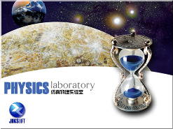
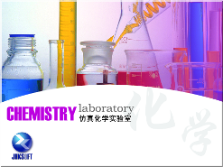

综述
物理和化学是以实验为基础的自然科学，人们对科学规律的发现是通过对自然现象的反复观察、探究和验证逐步完成的。物理和化学研究主要用的是实验方法。掌握实验方法以及完成实验所必须的技能，是学好物理和化学的关键。下面给大家推荐几个仿真实验应用。
PC端应用

仿真物理实验室的魅力并不在于可以打开已经有的一些例子和调整一些参数，而在于自己可以自由创建实验和课件，而且创建工作是如此的简单，不象某些课件制作工具，需要花费很长的时间和很大的精力来学习和制作，而且效果也不一定很好。由于本软件将物理定律全都内置了，用户所需要做的只是设置一下实验的初始环境，这使得在本软件中制作自己的实验变得非常容易，我们只要花很少的时间就可以做出专业的课件，而且可以轻松实现编译成独立的课件。

仿真化学实验室是一款虚拟的化学实验室软件，是由《仿真物理实验室》之后的又一力作，它具有全新的概念、严谨的科学性和开放的交互性，让每一位同学都可通过该软件学习到更多化学知识。仿真化学实验室自带试管、烧杯、酒精灯、铁架台、烧瓶、锥形瓶、集气瓶、漏斗、导管等这些真实实验室中的器具，在仿真实验室中也有尽有。我们可以自由的搭建实验仪器、添加药品，并让它们进行反应。
移动端应用
NB物理实验涵盖了初高中主流教材中的电与磁、力学、光学、热学、声学、家庭电路、力与运动、近代物理等内容，所涉及的器材共计300多种，能够实现上万种物理实验操作与演示，我们可以尽情的探索，器材损坏也不用担心。NB物理实验将抽象的实验现象通过可视化形式表现出来，全面激发学生对物理实验的学习热情，同时NB物理实验学生端让实验操作不再受空间和时间的限制，同学可在课前和课后针对实验进行反复练习和操作，充分提高学习效率和质量。
-提供各种仪器
-提供各种化学原料
-模拟化学反应
-实验报告